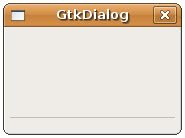

若想要自訂對話方塊，則可以使用GtkDialog來組合元件，GtkDialog預設是分作兩個區域的元件，如下圖所示：

基本上，對話方塊上方是置放各式元件的區域，下方是置放按鈕的區域，中間以分隔線作區隔，從類別結構上來看：
typedef struct {
GtkWidget *vbox;
GtkWidget *action_area;
} GtkDialog;
GtkWidget *vbox;
GtkWidget *action_area;
} GtkDialog;
GtkDialog上方vbox為一個 GtkVBox，下方action_area為一個 GtkHButtonBox，中間的分隔線則為 GtkHSeparator，分隔線可以使用gtk_dialog_set_has_separator()函式來設定是否顯示。自訂對話方塊，事實上就是類似組合視窗中各個元件及其版面配置。
先前所示範的對話方塊都是獨佔（Modal）對話方塊，也就是若不回應對話方塊，則無法操作其parent視窗，通常對話方塊都是獨佔的，因為它們常作為要使用者立即回應以便進行下一步的作用，在也可以簡化視窗操 作的設計，若是設定為非獨佔式，則操作設計上會複雜許多，最基本的就是對話方塊關閉後，何時該銷毀對話方塊的問題，一個方法是可以將對話方塊的 "response" Signal連接至gtk_widget_destroy()函式，當對話方塊上的有個按鈕被按下或視窗被關閉時，銷毀對話方塊。
下面這個範例程式以自訂對話方塊的方式模擬 GtkMessageDialog 中的訊息對話方塊，並示範非獨佔式對話方塊的使用：
- gtk_dialog_demo.c
#include <gtk/gtk.h>
void clicked_callback(GtkButton *button, GtkWindow *window) {
GtkWidget *dialog = gtk_dialog_new_with_buttons("GtkDialog", window,
GTK_DIALOG_DESTROY_WITH_PARENT,
GTK_STOCK_OK, GTK_RESPONSE_OK,
NULL);
GtkWidget *label = gtk_label_new(NULL);
GtkWidget *image = gtk_image_new_from_stock(GTK_STOCK_DIALOG_INFO,
GTK_ICON_SIZE_DIALOG);
GtkWidget *hbox = gtk_hbox_new(FALSE, 5);
gtk_dialog_set_has_separator(GTK_DIALOG(dialog), FALSE);
gtk_label_set_markup(GTK_LABEL(label),
"<b>良葛格學習筆記</b>\nhttp://caterpillar.onlyfun.net");
gtk_container_set_border_width(GTK_CONTAINER (hbox), 10);
gtk_box_pack_start_defaults(GTK_BOX(hbox), image);
gtk_box_pack_start_defaults(GTK_BOX(hbox), label);
gtk_box_pack_start_defaults(GTK_BOX(GTK_DIALOG(dialog)->vbox), hbox);
g_signal_connect(G_OBJECT(dialog), "response",
G_CALLBACK(gtk_widget_destroy), NULL);
gtk_widget_show_all(dialog);
}
int main(int argc, char *argv[]) {
GtkWidget *window;
GtkWidget *button;
gtk_init(&argc, &argv);
window = gtk_window_new(GTK_WINDOW_TOPLEVEL);
gtk_window_set_title(GTK_WINDOW(window), "GtkDialog");
button = gtk_button_new_with_label("按我");
gtk_container_add(GTK_CONTAINER(window), button);
g_signal_connect(GTK_OBJECT(window), "destroy",
G_CALLBACK(gtk_main_quit), NULL);
g_signal_connect(GTK_OBJECT(button), "clicked",
G_CALLBACK(clicked_callback), window);
gtk_widget_show_all(window);
gtk_main();
return 0;
}一個執行的畫面如下所示：